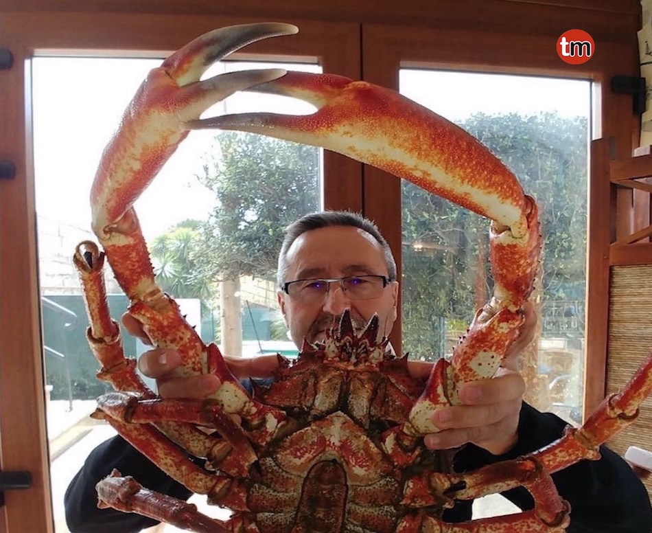

Centollo
También conocido como Changurro o Txangurro, Cámbara, Araña, Cranca, Peteiro, Bruño o Cangrejo velludo. Es un crustáceo braquiuro y decápodo. Pertenece a la familia Majidae, la misma que los cangrejos. Vive en la costa en fondos rocosos o arenosos. Habita en profundidades mayores de 100 m.
Centollo
Maja squinado
(Eng) Spinous spider crab
(Fr) Araignée européenne
Peso 500 gr - 4 kg Dimensiones 12 - 20 cm